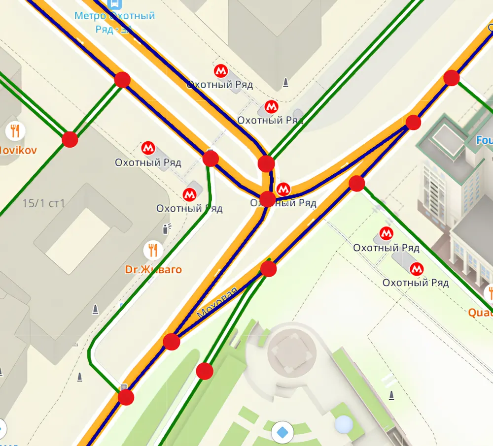
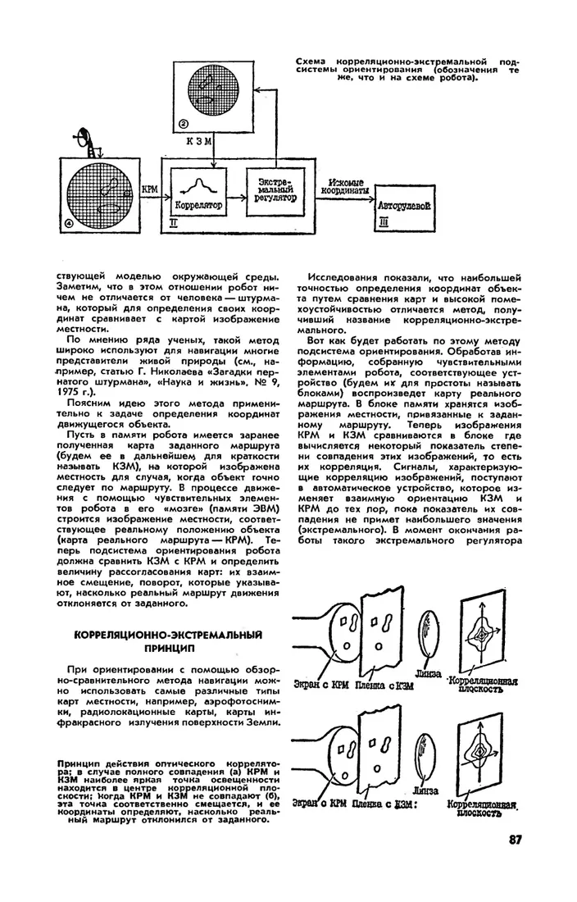
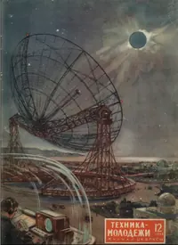
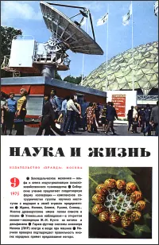
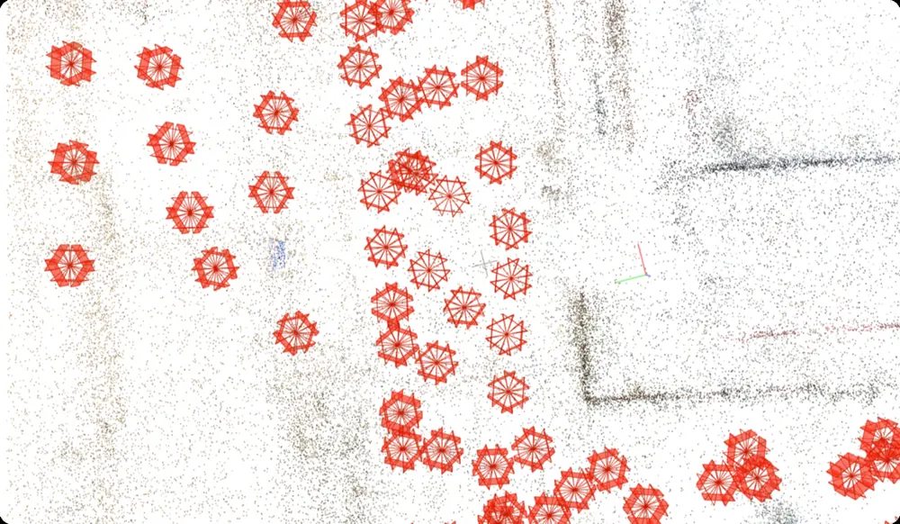
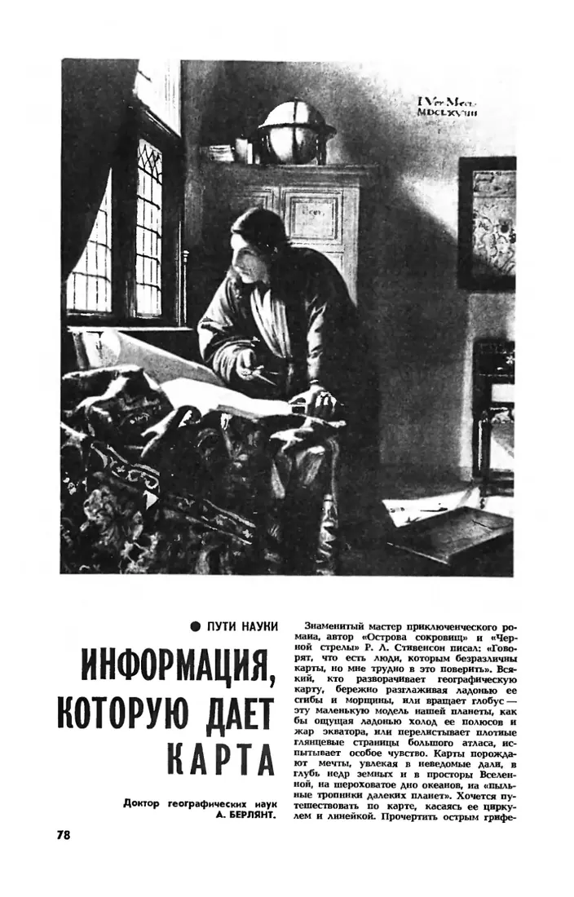
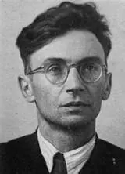

Сначала его рисовали в журналах, потом считали на ЭВМ, теперь строят за миллисекунды. Это музей одной инженерной задачи: как довести человека из точки А в точку Б. Со статьями 1938–1984 годов и рассказами инженеров, которые решают её сейчас.
просмотренные улицывстречный поискмаршрутпробки и перекрытия
1
Зал 1 1972 → 2026
Как посчитать путь?
В 1972 году «Наука и жизнь» дала Вычислительному центру Главмосавтотранса задачу: обойти 12 букинистических магазинов и вернуться в редакцию. ЭВМ получила 33 км. Автор статьи считал вручную около часа и получил 35,6 км. Попробуйте сами.
Ваш маршрут, по прямой0 км
Магазинов0 из 12
Начните от редакции (А) и нажимайте на магазины в том порядке, в котором обошли бы их сами.
Магазины расставлены по адресам 1972 года приблизительно, центр схемы увеличен. Мы считаем расстояния по прямой, а ЭВМ считала по улицам, поэтому наши километры меньше журнальных.
«Задача, решенная ЭВМ за считанные секунды, потребовала от автора часа работы».О. Налбандян, «ЭВМ шагает по Москве». «Наука и жизнь», №7, 1972
Перебор работает только на маленьких задачах. Уже для 10 такси и 10 заказов вариантов 3 628 800, пишет автор. Поэтому в ВЦ использовали алгоритм, который заранее отбрасывает заведомо невыгодные варианты. Транспортную карту Москвы для него смоделировали математики И. Г. Медведевская и Т. М. Великанова.
Транспортная карта Москвы, смоделированная математиками ВЦ
Направленный дорожный граф, каждое направление движения отдельное ребро
Вес ребра
Расстояние и порожний пробег машин
Время проезда, которое оценивают по статистике и ML-моделям
Поиск
Алгоритм ВЦ, отсекающий невыгодные варианты
Дейкстра и A*, иерархия шорткатов, двусторонний поиск
Лучший путь
Самый короткий
Самый быстрый, а теперь и самый спокойный: штрафы за левые повороты, кольца и нерегулируемые перекрёстки
Как это решают сейчасИнженеры 2ГИС на Хабре

Март 2026 · Константин Чирихин
«Лёгкие маршруты» в 2ГИС: рассказываем про алгоритмы и новую систему штрафов
Лёгкий маршрут строится из оптимального: к весам рёбер добавляются штрафы за сложные манёвры. Чтобы поиск оставался быстрым, граф дополнен иерархией шорткатов, где одно ребро верхнего уровня покрывает несколько километров.
Красный подождёт. Как мы запускали «зелёную волну» в навигаторе 2ГИС
Навигатор учитывает всю цепочку светофоров на маршруте и подсказывает скорость, при которой их можно проехать без остановок. Главная задача дизайна: показать диапазон скорости так, чтобы не отвлечь водителя.
Чтобы проложить путь, нужна точка А. Спутниковой навигации ещё нет, а инженеры уже учат машину понимать, где она: сравнивать то, что она видит, с картой в памяти.

В. Тарасенко, А. Кориков. «Робот-штурман». «Наука и жизнь», №7, 1980, с. 84–90. Схема корреляционно-экстремальной системы ориентирования. Номер в архиве
Робот хранит карту маршрута. В пути он строит изображение местности и сравнивает его с картой. Сдвиг и поворот, при которых совпадение максимально, показывают, где он и насколько отклонился. В 1980 году сравнение делала оптика: экран, плёнка с картой и линза. Здесь то же самое делает ваш браузер.
Кадр «с камеры». Робот не знает, откуда он.
Нажмите «Найти себя на карте»: браузер сравнит кадр со всеми положениями на карте.
«…робот ничем не отличается от человека — штурмана, который для определения своих координат сравнивает с картой изображение местности».«Робот-штурман», 1980

1954. Ф. Честнов, «Радиоволны-путеводители»Радиолокационная картина местности совмещается с навигационной картой. «Техника — молодёжи», №12, с. 14–16.

1975. Г. Николаев, «Загадки пернатого штурмана»Как ориентируются птицы. На эту статью ссылаются авторы «Робота-штурмана». «Наука и жизнь», №9.
Как это решают сейчасИнженеры 2ГИС на Хабре

Октябрь 2025 · Дмитрий Чудаков, Андрей Кузнецов
Компьютерное зрение + ARKit = AR-навигация внутри зданий
Внутри торгового центра GPS ненадёжен. По одной фотографии телефон определяет координаты, направление взгляда и этаж. Для каждого ТЦ снимают около 10 000 кадров, в каждом около 3 000 ключевых точек. Локализация занимает около 100 мс.
Как 2ГИС адаптируется к проблемам с позиционированием
На одном тестовом маршруте по Москве системная геолокация сначала вела пользователя правильно, а потом «увезла» его в Шереметьево. Теперь каждый источник координат оценивается по поведению во времени, и приложение выбирает тот, которому можно верить. Когда сигнала нет, помогает режим «Шаг за шагом».
GPS · ГЛОНАСС · Galileo · BeiDou · Wi‑Fi · сотовые сети · собственные источники
К 1980-м карту начинают понимать как модель местности. По ней можно находить закономерности, которых не видно напрямую. Сегодня у этой модели можно просто спросить.

А. Берлянт. «Информация, которую даёт карта». «Наука и жизнь», №6, 1984, с. 78–82. Картограф рассказывает, как карта становится инструментом исследования. Номер в архиве
// запрос пользователя"Покажи кафе в районе Арбат, Москва с рейтингом выше 3"// что вызывает ассистент 2ГИС Проcreate_layer({
territory: "Арбат",
category: "кафе",
filters: "rating:[3 TO *]"
})
Пример из статьи «Как превратить запрос в дашборд: ИИ-ассистент для геоаналитики в 2ГИС Про», упрощён. Языковая модель переводит запрос в действия продукта по схеме ReAct, а данные берёт из API. Читать на Хабре
~500 RPSвыдерживает векторный поиск на pgvector, в 5 раз больше плановой нагрузки
<300 мсукладывается даже запасной, более полный поиск по HNSW
×10ускорил раскладку виджетов в 2ГИС Про пространственный индекс R-Bush
Инженеры прошлого не только решали задачи, но и делали прогнозы. Теперь их можно проверить. Как думаете, что сбылось?
Совпало с историей:0 из 4
Формулировки прогнозов — наш короткий пересказ статей. Оригиналы есть в списке источников внизу страницы.
56
Письмо в 2056
В 1956 году доктор технических наук Георгий Бабат опубликовал в «Технике — молодёжи» «Мечты инженера»: отрывки из статей, будто бы опубликованных в 2056 году. До 2056-го осталось 30 лет. Ответьте на семь вопросов, и мы соберём вашу статью из будущего.

Г. И. Бабат. «Мечты инженера (отрывки из статей, опубликованных в 2056 году)». «Техника — молодёжи», №6, 1956, с. 30–32
Эти вопросы пока открыты
Над ними работают инженеры многих команд, в том числе в 2ГИС: в маршрутизации, позиционировании, поиске и геоаналитике.